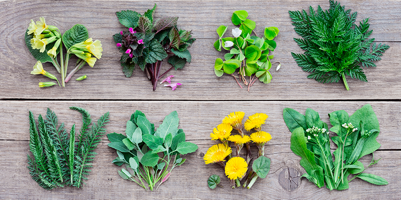

As Plantas Alimentícias Não Convencionais (PANCs) são um grupo diversificado de plantas que, apesar de serem comestíveis e muitas vezes nutritivas, não são amplamente cultivadas ou consumidas na maioria das sociedades, permanecendo fora do circuito comercial tradicional de alimentos. Essas plantas podem incluir folhas, flores, frutos, sementes, raízes e caules que são, por várias razões, ignorados pela agricultura convencional e pelos consumidores em geral.
As PANCs são importantes por várias razões:
-
Biodiversidade: Elas contribuem para a diversidade de dietas e sistemas agrícolas, oferecendo alternativas alimentares e ajudando a preservar espécies de plantas que de outra forma poderiam ser negligenciadas ou esquecidas.
-
Nutrição: Muitas PANCs são ricas em nutrientes essenciais, antioxidantes, fibras e compostos fitoquímicos benéficos, podendo oferecer benefícios à saúde não facilmente encontrados em alimentos convencionais.
-
Resiliência Ecológica: Por não serem amplamente cultivadas em sistemas agrícolas intensivos, muitas dessas plantas são adaptadas a condições específicas e podem ser cultivadas com menos recursos hídricos, fertilizantes e pesticidas, contribuindo para a sustentabilidade ambiental.
-
Segurança Alimentar: A promoção e o uso de PANCs podem aumentar a segurança alimentar, especialmente em comunidades vulneráveis, ao diversificar as fontes de alimentos e reduzir a dependência de culturas alimentares convencionais sujeitas a flutuações de mercado e problemas de safra.
-
Cultura e Tradição: Muitas PANCs fazem parte do patrimônio cultural de povos indígenas e comunidades locais, representando um elo com práticas alimentares e agrícolas tradicionais. A valorização e o uso dessas plantas podem contribuir para a preservação de conhecimentos culturais ancestrais.
Apesar de seu potencial, as PANCs enfrentam desafios para sua adoção mais ampla, incluindo a falta de conhecimento sobre como identificar, cultivar e preparar essas plantas. No entanto, há um crescente interesse por parte de chefs, nutricionistas, agricultores e consumidores conscientes, impulsionando uma redescoberta e valorização dessas espécies. Exemplos populares de PANCs incluem ora-pro-nóbis, taioba, dente-de-leão, caruru, entre muitas outras.